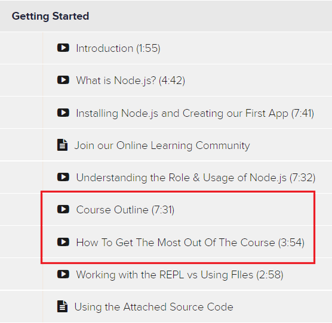

Overview
Applications and accounts to set up for the course
Please be sure to complete all of the course setup before continuing.
Getting started with the online course
For the first part of this semester we will build on many concepts taught in an online course. This course will effectively act as our textbook for the first several weeks of the semester. You will watch many lessons on your own, do some with your groups, and then do additional coding exercises on your own to both master the material and to prove what you have learned.
Having created a new Github repository (from the instructions below), you are ready to begin. As you engage in the online course, it is recommended that you organize your project by sections in the following manner:

Now you are ready to begin the online course. Please use the link provided by your instructor in the syllabus to purchase: NodeJS - The Complete Guide (the videos course that we will be using for our textbook).
Getting Started37min
Understanding the Basics 1hr 33min
- Total: Roughly 3-4 hours
One resource that may assist you throughout this course is the Speed control found at the bottom right of the video controls of the tutorials. Also, please note the strategies mentioned in the following sections:
